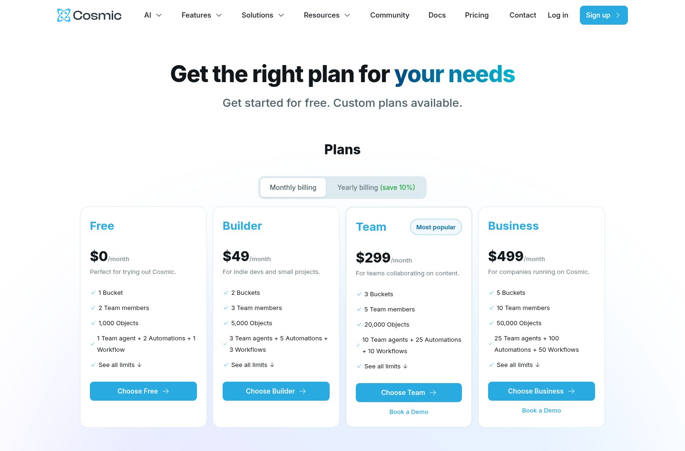

Small-footprint headless CMS landscape — 16 lesser-known players we mapped in one evening
Open any headless-CMS comparison list in 2026 and the first ten entries are the same: Storyblok, Contentful, Sanity, Strapi, Directus, Payload, Hygraph, Contentstack, DatoCMS, Ghost. After those there's a long tail — 30+ projects that each fill some specific niche but never broke into the consideration set of a generalist developer Googling "headless CMS." This page is a landscape map of sixteen of them: the ones our keyword research turned up under 300/mo brand searches but with shipping products and real users. None of them deserves a 2,000-word standalone hub from us; together they deserve one honest map.

We're the team behind SimpleReview, a Chrome extension that drafts code-fix PRs on whatever element you click on a broken admin or storefront. We are not affiliated with any of the sixteen vendors below. We don't have a partner program with them, we don't have referral codes, we haven't bought a paid seat. This page is a single landscape sweep done on 2026-05-07: pricing pages, GitHub repos, public docs, and one real curl against the Cosmic CDN. We didn't deploy each of these to a staging box — that would be sixteen self-hosted Docker stacks and we'd never finish. So this is a map, not sixteen reviews.
If you maintain one of the products below and we got a fact wrong — pricing changed, license changed, the project got acquired — open a GitHub issue and we'll patch this page. The dated source URL for every claim is in the table.
curl api.cosmicjs.com ·
When Tier-3 over Tier-1 ·
The articles we did write standalone
Why these sixteen exist
The short version: the big six headless CMSes optimise for "we are an editorial team that needs a CDN, a multi-language model, and a procurement-friendly SOC 2 report." Everyone outside that frame — a Hugo blogger who wants a UI, an Astro developer who wants content in git, a Japanese marketing team that wants a Tokyo-region API, an e-commerce shop that wants PIM and CMS in one box — gets a tool that fits them better than Contentful does. Each of the sixteen below is somebody's "fits me better than the big ones" answer. We've grouped them into four clusters; the clusters aren't perfectly clean (Caisy is both API-first and German, Keystatic is both code-first and git-backed) but a four-cluster map beats a sixteen-row alphabetical list for navigation.
The full comparison — sixteen on one screen
One row per product. Stack column says what you write your front end against and (where applicable) what the CMS itself is built in. Pricing column gives the floor and the next paid step on the day we tested. Source column is the URL we verified the row from on 2026-05-07.
| Name | Slug | Stack | OSS? | Pricing floor → next step | Niche / why-it-exists | Source |
|---|---|---|---|---|---|---|
| Pages CMS | pages-cms | Next.js + React; edits files in your GitHub repo | MIT | Free / self-host | UI for Jekyll/Hugo/Astro/Gatsby content sitting in a repo. No DB, no API. | pagescms.org |
| microCMS | microcms | SaaS; REST + JS/TS SDKs; Tokyo-region API | No | Hobby ¥0 → Team ¥4,900/mo → Business ¥75,000/mo | The Japan-native headless CMS. Default choice on JP dev Twitter. | microcms.io/pricing |
| ApostropheCMS | apostrophecms | Node.js (server-rendered or headless); Vue admin | MIT (Community) | Free / self-host → Pro $199/mo → Assembly $499/mo | Visual in-page editing. The "marketing site CMS" that happens to do headless. | apostrophecms.com/pricing |
| Caisy | caisy-cms | SaaS GraphQL; component blueprints | No | Free → Growth $49/mo → Enterprise $1,499/mo | The German Storyblok-shaped competitor. Generous free tier (5k entries). | caisy.io/pricing |
| Cosmic | cosmic-cms | SaaS REST; Next/React/Vue/Astro/Nuxt SDKs | No | Free → Builder $49/mo → Team $299/mo | The "AI-first" rebrand — agents that draft content in-product. | cosmicjs.com/pricing |
| Flotiq | flotiq | SaaS REST + GraphQL; PHP/Node/Python/JS SDKs | No | Free → Basic $37/mo → Growth $114/mo | Polish API-first CMS, EU-funded. Conservative pricing, classic CRUD shape. | flotiq.com/pricing |
| Prepr CMS | prepr-cms | SaaS GraphQL; personalisation engine built in | No | Community €0 → Flex €299/mo (yearly) → Enterprise custom | Dutch CMS with A/B testing & personalisation as core, not add-on. | prepr.io/pricing |
| Front Matter CMS | front-matter-cms | VS Code extension; reads/writes Markdown front matter | MIT | Free | "CMS that's just your editor." Lives inside VS Code, edits files locally. | frontmatter.codes |
| Keystatic | keystatic | React; ships as Next/Astro/Remix integration | MIT | Free / self-host | Local + GitHub modes; schema is TS code. Thinkmill (Sydney) project. | keystatic.com |
| JekyllPad | jekyllpad | Browser SaaS; talks to your Jekyll/Hugo/Astro repo | No (SaaS) | Free — 5 posts/mo → paid (TBC) | Browser WYSIWYG for SSG repos. The "non-developer drafts in browser" wedge. | jekyllpad.com |
| Spinal CMS | spinal-cms | Browser SaaS; git-based; SSG-agnostic | No (SaaS) | See /pricing/ |
"SaaS & agency marketing-content git workflow without the git." Niche use case. | spinalcms.com |
| Crystallize | crystallize | SaaS GraphQL; PIM + commerce + CMS in one | No | Particle free + metering → Atom $949/mo → Crystal custom | Headless commerce with content built in. Norwegian/Oslo team. | crystallize.com/pricing |
| GitCMS | gitcms | Hosted git-based CMS; SSG-agnostic | No (we couldn't verify) | Unverified (page was 403 for our IP) | Another git-backed editing UI; small footprint, hard to confirm liveness. | gitcms.dev |
| Sitepins | sitepins | SaaS git-based; Astro/Next/Hugo/Nuxt/Svelte/11ty/Jekyll | No (SaaS) | Free trial → paid (page TBC) | Visual editor over a static-site repo. Same shape as Pages CMS but SaaS. | sitepins.com |
| Vault CMS | vault-cms | Unclear — effectively no US search demand | ? | ? | Trademark collision with HashiCorp Vault & medical-device terms; no clear product page. | (no canonical URL we could verify) |
| StudioCMS | studiocms | Astro + libSQL; serverless-friendly | MIT | Free / self-host | "All-in-one CMS for your next Astro project." New project, small footprint. | studiocms.dev |
Two rows are honest "we couldn't fully verify" entries: Vault CMS and GitCMS. We left them in because cutting them would make the landscape feel cleaner than it is — the bottom of the long tail has projects with broken homepages, IP-banned servers, and dead Twitter accounts.
Group 1 — open-source git-backed (5)
Pages CMS · Front Matter CMS · JekyllPad · GitCMS · Sitepins
These five share one premise: your content already lives in a git repo as Markdown / JSON / YAML, and what you want is a UI on top of it. No separate database, no separate API. The CMS is a thin editor that commits to the repo on save; the SSG (Jekyll, Hugo, Astro, 11ty, Gatsby, Next, Nuxt) does the rest at build time. The differences inside the group are about where the editor lives:
- Pages CMS — a Next.js app you self-host (or use free pagescms.org). MIT, on GitHub. Their own line: "Manage content and media right in your GitHub repository. No database, no API, no extra backend."
- Front Matter CMS — the editor is VS Code. Extension. Open it on a Hugo/Jekyll/Astro/11ty/Docusaurus repo and you get a content panel, media library, calendar. Free, MIT, offline. Lowest friction if you already live in VS Code.
- JekyllPad — browser SaaS, same idea as Pages CMS hosted. Free tier capped at 5 posts/month is unusually small — a freemium funnel, not a "free forever" tier.
- Sitepins — browser SaaS, broader SSG support (Astro, Next, Hugo, Nuxt, Svelte, 11ty, Jekyll, plus TOML). Free trial; paid pricing not on the homepage.
- GitCMS —
gitcms.devreturned403 Forbiddenfor headless Chrome on 2026-05-07;gitcms.blog301s to it. DNS alive, product surface unverifiable from outside.
Group 2 — API-first SaaS small-time (5)
microCMS · Cosmic · Caisy · Flotiq · Prepr CMS
Same product shape as Contentful or Sanity — hosted SaaS, content schema, REST or GraphQL, admin UI, SDKs — but each has a regional or vertical wedge.
- microCMS — JP-native. Pricing in yen: Hobby ¥0 / Team ¥4,900 / Business ¥75,000 (~$0 / $32 / $490). Verbatim from their site: "microCMSはAPIベースの日本製ヘッドレスCMSです" (microCMS is an API-based Japan-made headless CMS). The local-data-residency answer for ap-northeast-1.
- Cosmic — American, pivoted to "AI-first" in 2025-2026. Homepage pitch: "Agents that create content, build features, and ship code, without leaving the chat." Free / Builder $49 / Team $299. Real
curlagainst their CDN below. - Caisy — German. Most generous free tier in this group: 3 users, 2 locales, 5,000 entries, 1M API calls, 100GB traffic. Growth $49/mo. Published numbers, no "contact us" theatrics for the prosumer tier.
- Flotiq — Polish, EU-funded. Free 1k objects / 100k API calls; Basic $37/mo. Conservative CRUD admin, SDKs in PHP/Node/Python/JS/.NET.
- Prepr CMS — Dutch (Utrecht). Wedge is personalisation as core, not enterprise add-on — A/B testing, customer events, adaptive content all in Community. Community €0 / Flex €299/mo (yearly) / Enterprise custom.
Group 3 — code-first / framework-rooted (3)
ApostropheCMS · Keystatic · StudioCMS
Unifying theme: your schema is code. You define the model in JS/TS, the admin UI is generated, the CMS is a library you import rather than a service you call.
- ApostropheCMS — oldest project on this page. Node.js. Community Edition is MIT, free forever, with unlimited users/types, in-page visual editing, Vue admin. Hosted Pro $199/mo (5 editors, advanced permissions, document versions, AI translation); Assembly $499/mo+ for multisite. The open-source edition is genuinely the same product as the hosted one.
- Keystatic — React, MIT, by Sydney consultancy Thinkmill (same shop as KeystoneJS). Ships as a Next/Astro/Remix integration. Schema in TypeScript. Edits commit to GitHub or save locally depending on mode. Their line: "A tool that makes Markdown, JSON and YAML content in your codebase editable by humans."
- StudioCMS — youngest. MIT, Astro-native, data in remote libSQL (Turso's open core). Pitch: "the all-in-one content management solution for your next Astro project." Brand search 0/mo because too new to index, but Astro + libSQL + serverless makes it one to watch.
Group 4 — niche / orphan (3)
Crystallize · Spinal CMS · Vault CMS
Three that don't fit cleanly elsewhere.
- Crystallize — not really a "headless CMS" in the same sense. It's headless commerce with PIM and content rolled in. Norwegian (Oslo), GraphQL-first, metered on top of base tiers. Particle free + metering / Atom $949/mo + metering / Crystal custom. The answer for content-heavy e-commerce that doesn't want to bolt Shopify onto Sanity.
- Spinal CMS — "marketing-content git workflow without the git." SaaS companies and agencies with mixed-technical teams: developers want git-backed content, marketers don't want to learn
git. Closed-source SaaS. - Vault CMS — trademark collision soup (HashiCorp Vault, medical-device hits, unrelated brands). Our keyword research couldn't find a canonical product page with measurable US search demand under any disambiguating phrasing. Listed because it appeared in Tier-3 by name; we can't responsibly link to a specific product.
First-hand: curl https://api.cosmicjs.com
Sixteen products is too many for us to hands-on-test each one inside a single article. So we picked one — Cosmic — and ran the same evaluation walk we ran on Contentful in our standalone scout (pricing page + a real curl against the public CDN). One first-hand artifact for the round-up, in keeping with our rule: never ship a CMS write-up without at least one verifiable, dated, reproducible thing the reader can run themselves.

https://www.cosmicjs.com/pricing via headless Chrome at 1440×950. Tiers visible: Free $0/mo, Builder $49/mo, Team $299/mo (most popular), and Business $499/mo. The "AI-powered headless CMS" rebrand is front and centre in the top-nav menu structure (AI / Features / Solutions / Resources / Community / Docs).Now the production API. Cosmic's CDN is api.cosmicjs.com at version v3. Hit it with a deliberately invalid bucket slug:
$ curl -sD - "https://api.cosmicjs.com/v3/buckets/INVALID/objects"
HTTP/2 404
content-type: application/json
x-amzn-requestid: e24c554b-0a6b-48df-93b9-67e29b35f395
access-control-allow-origin: *
x-amz-apigw-id: dCK3mEawjoEESxw=
cache-control: private
x-amzn-trace-id: Root=1-69fd8b63-420d8e261e65a2d11e56cf9e;Parent=0734d23220908819
accept-ranges: bytes
via: 1.1 varnish, 1.1 varnish
x-served-by: cache-dub4341-DUB, cache-bma-essb1270041-BMA
x-cache: MISS, MISS
x-timer: S1778223971.429817,VS0,VE175
content-length: 64
{"status":404,"message":"bucket with slug: 'INVALID' not found"}Three things worth noting in this response, because they tell you most of what you need to know about the platform without reading any docs.
One. The error envelope is flat and human-readable: {"status": 404, "message": "bucket with slug: 'INVALID' not found"}. Compare to Contentful's nested {"sys": {"type": "Error", "id": "NotFound"}, "message": "...", "requestId": "..."}. Cosmic's is friendlier to grep, harder to programmatically switch on. There's no requestId field, so if you escalate to support, you correlate by the AWS x-amzn-requestid header instead.
Two. The infrastructure is AWS API Gateway behind Fastly. x-amz-apigw-id is the API Gateway ID; via: 1.1 varnish + x-served-by: cache-dub4341-DUB, cache-bma-essb1270041-BMA tells you Fastly is fronting it (Dublin and Stockholm-Bromma POPs on this request). Same plumbing shape as Contentful, different POPs.
Three. cache-control: private on a 404 with x-cache: MISS, MISS means the 404 was authoritative from origin, not edge-cached. Good behaviour — the alternative would mean a typo'd bucket slug persisting as an error after the user fixes it.
For comparison, hitting the API root with no auth header:
$ curl -sD - "https://api.cosmicjs.com/v3/"
HTTP/2 403
content-type: application/json
x-amzn-errortype: MissingAuthenticationTokenException
x-amz-apigw-id: dCK3oEYdDoEErZQ=
{"message":"Missing Authentication Token"}That MissingAuthenticationTokenException is the AWS API Gateway default response for an unrecognised path — not a Cosmic-specific message. /v3/ isn't a defined route; only /v3/buckets/... sub-paths are. The "discover buckets" attack surface is closed at the gateway.
Both put Varnish in front, both run on US East infrastructure with EU edge POPs, both return JSON envelopes on errors. Cosmic's envelope is simpler (flatter, no sys wrapper). Cosmic exposes the AWS plumbing in headers (x-amz-apigw-id, x-amzn-requestid); Contentful hides it. Cosmic's free tier is more generous in dollar terms ($0 with a usable cap vs Contentful's free tier capped on locales). Pick Contentful if your buyer is a Fortune-500 procurement officer who wants a SOC 2 report; pick Cosmic if your buyer is you and you want to ship this weekend and not see a $300 wall in month seven.
When Tier-3 over Tier-1
The honest answer most developer blogs won't give you: most projects should pick a Tier-1 headless CMS. Storyblok, Contentful, Sanity, Strapi, Directus, Payload, Hygraph — the reason these have 2,000-13,000/mo brand search volume is the same reason they have a thick consideration set: they ship, they have docs, they have a Stack Overflow long tail of answers, the SDKs are maintained, the migration paths in and out are well-trodden. Picking microCMS over Sanity for a generic English-language SaaS in 2026 mostly means you'll have to write your own Stack Overflow answers.
Three situations where one of the sixteen above is genuinely the better answer:
- Your content lives in git already. If you have a Hugo or Astro site in a GitHub repo, and you want one non-technical person to edit posts, the Tier-1 answer is "spin up a Sanity Studio, write a content adapter, deploy a build pipeline that pulls from Sanity and writes Markdown into your repo on save." The Tier-3 answer is "install Pages CMS or Front Matter, point it at the repo, done." That's a 2-hour Saturday vs a 2-week sprint.
- You have a regional data-residency requirement that's not EU. microCMS has Tokyo regions because it's a Japanese company. Caisy is a German company on AWS Frankfurt. Flotiq is Polish. If your compliance requirement is "data must stay in country X" and X isn't on the residency list of Contentful or Sanity, the Tier-3 list is where you start.
- You need a non-CMS feature that's a CMS feature here. Crystallize bundles PIM and content management for commerce. Prepr bundles personalisation and A/B testing as core, not as a $500/mo add-on. ApostropheCMS bundles in-page visual editing the way WordPress does, which most headless CMSes deliberately don't. If a Tier-1 quote includes a $1,000-2,000/mo add-on for the feature you need, a Tier-3 vendor where it's free-tier-included is worth a closer look.
Outside those three: pick a Tier-1. You'll regret it less.
The articles we wrote standalone (Tier 1 + 2)
For the seventeen larger headless CMSes that do clear our brand-volume bar, we have individual scouts — same shape as our Contentful piece. Grouped by tier so you can find the right one:
Tier 1 (~2,000+/mo brand search)
- Storyblok — the visual-editor-first headless CMS, German, generous free tier.
- Ghost — the headless-blog wedge; nonprofit foundation; Node.js; SQLite-or-MySQL.
- Contentstack — behind the "Contact us" wall, enterprise-only pricing.
- Contentful — the legacy incumbent; real
curlagainstcdn.contentful.com; the €300 Lite wall. - Hygraph — multi-region GraphQL, content federation; ex-GraphCMS.
- Hashnode — developer-blog SaaS with a headless API; the dev-publishing wedge.
Tier 2 (~300–2,000/mo brand search)
- Decap CMS — the renamed Netlify CMS; static-site git CMS; MIT.
- Sitecore XM Cloud — the .NET enterprise; "Contact us" pricing.
- DatoCMS — the GraphQL-first SaaS; Italian; clean DX.
- Optimizely CMS — the personalisation-experimentation enterprise (article TBD).
- ButterCMS — the "API on top of any back end" pitch (article TBD).
- Kontent.ai — ex-Kentico Kontent; SaaS; AI repositioning (article TBD).
- TinaCMS — visual editing on git; React-first.
- Builder.io — visual page-builder; design-to-code AI focus.
- CloudCannon — SSG hosting + visual editing; Jekyll/Hugo/Eleventy first.
- Sanity — Content Lake; structured-content pitch; React Studio.
- Prismic — slice-machine; the component-content wedge (article TBD).
- KeystoneJS — TS-schema-first headless; Thinkmill; same shop as Keystatic above.
And the standalone open-source big-three back-end CMS scouts, which sit adjacent to all of the above: Strapi, Directus, Payload.
What we'd actually do
If we were starting an English-language SaaS marketing site tomorrow with a small editorial team and a Next.js front end, we'd still pick Sanity or Storyblok for the boring stable reason — the SDKs and the Stack Overflow long tail are denser. If we were starting a Hugo blog with one author and one sometimes-editor, we'd pick Pages CMS or Front Matter and not pay anyone. If we were a Japanese marketing team, microCMS. If we needed PIM + commerce + content in one box, Crystallize. The sixteen products here exist because each is the right answer for some specific shape of team the giants don't fit. Knowing the map matters more than knowing each cell.
Things we'd update later: confirm GitCMS liveness from a non-headless browser; pull next-tier pricing for JekyllPad / Sitepins / Spinal beyond the marketing floor; promote ApostropheCMS to a standalone Docker scout if reader interest emerges; track StudioCMS volume into 2026-Q4. SimpleReview — the Chrome extension we ship — works on a Cosmic-rendered front end the same way it works on a microCMS or Keystatic one, because by render time it's just HTML.